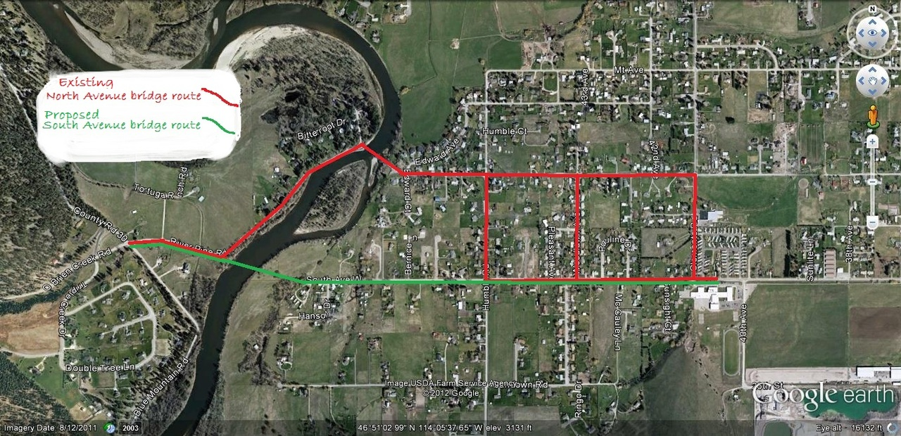

IMAGE
Maclay Bridge is an old single lane bridge over the Bitterroot River west of Missoula. According to Historical Research Associates in a report for the South Avenue bridge project, in 1953 the bridge’s main truss section (called a Parker truss, pictured above) was salvaged from a Blackfoot River site and erected at the Maclay site. It was intended to replace part of a previous bridge that washed out in 1948. The old bridge now consists of 3 piers in the river and 4 sections: the 1953 Parker truss, one pony truss, and two reinforced concrete spans erected in 1964, with many repairs over the years as parts wore out, washed out or failed. It is classified as functionally obsolete and fracture critical by the Montana Department of Transportation (MDT) and Missoula County officials.
Besides being a single lane bridge with accident clusters at the nearly 90 degree turn on the west end and a 45 degree turn on the east, it has structural and stability problems due to its age, unknown foundations, vulnerability to floods, and deterioration. It has a very low sufficiency rating of 27.3 out of 100 and 98.3% of all Montana off-system bridges rate higher than it. In addition to its approaches violating State safety standards, the bridge is the site of many deaths and accidents. It’s old and its many parts are worn out including the deck of the bridge in which holes have sporadically appeared through which the river could be seen down below (see following photo). Due to the low clearance of the bridge, it is vulnerable to being washed out in the next 100 year flood event.
IMAGE
Due to its bad configuration, the old bridge has caused ongoing environmental damage to the river channel and banks, including unnatural channel constriction and scour, bank erosion and sediment deposition. It is likely a legal liability to the County and an “attractive nuisance” due to the many diving and swimming accidents it invites.
Two separate environmental studies completed by the State and County of bridge alternatives both recommended construction of a new bridge at a South Avenue river crossing over other options, including rehabilitating the old bridge. The 1994 and 2013 studies confirmed through detailed analyses that a new bridge would not create a bypass or attract more traffic. Instead, the new bridge would provide a shorter and much more efficient route that would reduce traffic impacts on 5 streets in the Target Range neighborhood (studies show North Ave., Clements, Woodlawn, Humble and River Pines Rd. would see reduced traffic with a South Avenue bridge). See following air photo. Most of the traffic crossing Maclay Bridge comes from or goes to South Avenue.

Maclay Bridge is currently closed to school buses due to the weight limit placed on it by MDT and the unsafe conditions, therefore school children who live west of the river must ride to and from school by a much longer route every day. (See Missoulian article here at https://missoulian.com/news/local/mdt-maclay-bridge-unsafe- for-school-buses/article_69633f8a-7cf8-5584-aecd-7a9196b0c292.html). Emergency vehicles such as fire trucks are severely restricted in crossing the bridge which limits response times west of the river.
Missoula County Commissioners voted unanimously in 2013 to ask the MDT to use Federal Gas Tax funds to replace the old single lane bridge with a new 2 lane bridge that would meet current and future needs and at a better site at South Avenue. They signed a formal project agreement in 2014. In 2015, the Commissioners again passed a unanimous resolution reaffirming commitment to the project. All commissioners since 1994 except Dave Strohmaier have supported the project.
Unfortunately, Mr. Strohmaier as a newcomer in 2016 and apparently without having read the studies, displayed bias against the scientific reports done to that date and favored instead an opposition group, as reported and criticized by the Missoulian newspaper (see article here https://missoulian.com/opinion/editorial/time-for- missoula-county-to-build-bridges/article_e38ab82c-a437-5da0-9053-34c8b38279fe.html). See also this Missoulian article that reported on Strohmaier’s behavior: https://missoulian.com/news/local/missoula-county- constituents-upset-over-emails-forwarded-by-commissioner/article_00a06197-1e60-5713-9260- 30d5dc9dfe8a.html
MDT and FHWA informed Strohmaier that the county will lose the $12.5 to $14 million funds already allocated and would have to pay back $1 million spent to date if the Commissioners abandon the project. In addition, MDT and FHWA have made it very clear that they will not pay for rehab of the old Maclay Bridge for many legitimate regulatory, safety, environmental, and financial reasons. In addition HDR Engineering strongly defended its environmental and engineering studies (which are in addition to--and agree with--the 1994 and 2013 studies) in its rebuttal to Strohmaier. As a result, Strohmaier and the other commissioners revised their stance and now appear to be allowing the project to proceed (https://missoulian.com/opinion/columnists/next- steps-for-south-avenue-bridge/article_75807f5b-e123-576c-9005-644f922e848a.html).
The South Avenue bridge project is a County-wide issue that all taxpayers should be concerned about. Clearly it would better serve the County and save taxpayer’s money if Federal gas tax dollars were used to build a new 2 lane bridge in a better location instead of County taxpayers having to reimburse the State the $1million spent so far and then pay County dollars to fix up an old decrepit single lane bridge in a lousy location. All County taxpayers INCLUDING Missoula city residents will pay, likely through increased property taxes, if the Commissioners don't proceed with the South Avenue project. Please email and/or phone the county commissioners and let them know your thoughts.
You can follow the progress of the South Ave. bridge project and get involved in the design and construction process, which started in 2015, at: www.southavenuebridge.com
The Bitterroot Bridges Coalition is an incorporated non-profit organization of Missoula County residents who are responsible for this website. Our goal is to help the Missoula County Commissioners and the MDT identify and apply common sense solutions to the real problems at Maclay Bridge such as advancing the South Avenue bridge project and devising better management of public use of the lower Bitterroot river ecosystem.
We support a safe new attractive 2-lane bridge with a walkway at South Avenue that follows the scientific recommendations of Montana licensed engineers employed by MDT and the County to meet the needs of the county into the future and that addresses environmental and safety issues. We also support removal of the old bridge due to its unsafe condition, the many environmental problems it causes, and the need for restoration of the bed and banks of the river at that site.
For more information, contact us at our email address: Bitterrootbridges@gmail.com You can also watch this video on MaclayBridge and the South Ave. bridge project done by MCAT. It’s available on youtube: https://www.youtube.com/watch?v=CwrdqRk0JZ8 "The problem with common sense is that it is not so common anymore." —Voltaire
The following are a few selected documents that help illustrate the need for the South Avenue bridge project and removal of the old bridge. Again, for more information, please visit the official project website at: www.southavenuebridge.com or email us at Bitterrootbridges@gmail.com
1. The options for Maclay Bridge and the reasons for its removal are detailed in the following matrix done by HDR Engineering. The County Commissioners have selected the recommended option, Option 1 Remove Bridge.
IMAGE
2. An expert licensed bridge engineer who lived in the area explained the folly and “red herring” status of rehabilitating Maclay Bridge in a letter to Commissioner Slotnick that was posted on the County’s website:
Merv Eriksson March 29, 2019
845 Wyoming, Suite 402
Missoula, MT 59801
Subject: Maclay Bridge/South Avenue Bridge
Dear Commissioner Slotnick,
I’ve tried to avoid getting involved with this issue since its recent re-emergence. Until 6 months ago, my wife and I lived on Riding Ring Road, near the east end of the proposed South Avenue Bridge. My wife and I enjoyed the peace and solitude of the area.
However, I have been a professional bridge engineer for almost 44 years. I’ve worked for the Minnesota Dept. of Transportation, the Federal Highway Administration, the US Forest Service and a Missoula bridge engineering firm. I’ve designed, or approved the designs, of more than four hundred bridge replacements or major rehabilitations. For the majority of those bridges I was employed by the transportation agency owning those bridges. Therefore, I was involved in determining if they should be repaired or replaced. I was the primary author of the publication Identifying and Preserving Historic Bridges. I know bridge management and historic bridge rehabilitation, and I know the history of the Maclay Bridge.
I avoided involvement because I didn’t believe that pouring more money into the existing Maclay Bridge could possibly ever survive as a viable option. I knew that FHWA could not put money into a substandard bridge and that private, County State and Federal specialists would strongly recommend replacement. And South Avenue was easily the best location. I knew that would be the case when we built our home in 2008.
With the answer so obvious, I didn’t want to alienate my friends and neighbors on South Avenue who had been panicked by the efforts of MBA. Actually, I never felt like it was a big deal. The improved access provided by the new bridge will offset the inconvenience of more traffic, provided speeds are kept down and South Avenue from Humble Street west is upgraded. It never occurred to me that a small group of largely well meaning, but narrowly focused citizens could so severely sidetrack a good project.
I was involved with two bridge rehabilitations using the superimposed arch method endorsed by the MBA. In both cases (Lucille Bridge in central Idaho and Hoyt Flats Bridge near Avery, Idaho) traffic volumes were very low and single lane bridges were appropriate for these Forest Service roads.
That is not the case at the Maclay Bridge. The current type and volume of traffic precludes the acceptability of a single lane bridge, and this will only worsen as the bridge ages. Without getting too technical, the existing bridge has many components, all of which are old and many are deteriorated. Reinforcing the truss still commits the County to continued maintenance. It’s like replacing the engine of an old Yugo. The engine may run well but the wheels could fall off next year.
There is always an environmental cost in building a new bridge. That doesn’t mean we stop building bridges. The environmental reviews and requirements of both State and Federal government entities mitigate those affects as much as is reasonable to expect. Building the new South Avenue Bridge will have far less negative environmental effect than leaving the existing, under-spanned Maclay bridge in place.
The Maclay Bridge most certainly does not have exceptional historic significance and what historic integrity it has retained after having been moved and frequently repaired, would largely be lost by the imposition of the arch in the rehabilitation. I don’t think anyone has a love for this bridge, other than as a red herring to prevent construction of the new South Avenue Bridge.
Your decision on letting this project move forward should not be a hard decision. The County either allows the MDT and FHWA to construct a new bridge on South Avenue. Or, the County stops that action, repays $1.4 million to MDT and FHWA and tries to get by with a dysfunctional bridge across the Bitterroot River.
The Super-imposed Arch Rehabilitation option will never be constructed, since no responsible government entity will ever fund such a thing. FHWA cannot participate and MDT would want nothing to do with it. Missoula County residents will stand up at some point and refuse to fund such a waste of taxpayer money.
Although this decision should be an easy one for you, I’m sure the fallout will be difficult. The people actively involved with the Maclay Bridge Alliance feel that you owe them your allegiance and they will be very upset if you allow the project to continue. Difficult as it may be, I don’t think you have any real option but to move the project forward. Killing the project would be irresponsible.
Merv Eriksson
3. In a Missoulian Guest Editorial, former Commissioner Jean Curtiss states her views on the South Ave. bridge project:
I attended the Missoula County commissioners' meeting with the Montana Department of Transportation and Federal Highway Administration "to seek clarity" regarding the Maclay Bridge replacement project, in Helena, Feb. 13(2019).
Commissioner Nicole Rowley is very skilled at listening, asking clarifying questions and capturing what is said succinctly.
As a new commissioner, Josh Slotnick heard about the project and the process. He asked good questions and seems anxious to learn more from the consultants the county hired.
Commissioner Dave Strohmaier said more than once that he didn’t want to "get into the weeds" of the reports and continued to ask if the county has the authority to stop the South Avenue Bridge alternative, ignoring years of studies, and instead rehabilitate Maclay Bridge; if the federal dollars can be diverted to Maclay; if the county can require more environmental studies; and if the county has to pay back the million dollars if they don’t agree with the professionals.
I was the commissioner who nominated the bridge to be replaced using the Off-System Bridge Program; accepted the pre-Montana Environmental Policy Act/National Environmental Policy Act preliminary alternative for a new South Avenue bridge; signed the agreement to pay back the federal funds if the county stopped the project without a legitimate reason; with concurrence from both Maclay Bridge Alliance and Maclay Bridge Coalition (now named Bitterroot Bridges Coalition), hired HDR, a nationally recognized professional firm, to do the MEPA/NEPA analysis under state and federal rules and regulations to be reviewed by state and federal agencies; directed HDR to study the cost and scope of a rehab of Maclay Bridge in detail to meet the goals of the project related to safety, etc.
I have read the many years of data. The answers are in those "weeds" — decades of research, science and engineering.
Elected officials have tough decisions to make and should use the best information available. It may not be the popular decision but will be the right decision for the good of the whole. When all the independent experts, from many disciplines, come to the same conclusion from different angles, the decision to be made is pretty clear.
It is good that the commission plans to meet with HDR and the county engineer to "get into the weeds" and understand why they made the recommendation to build a new bridge rather than put bandages on the old one. An engineer's stamp on a project reflects their representation of facts, not political influence.
There is also a 12-month clock running that the commission was counseled is not like football. They can’t run the clock and say "oh I guess we aren’t building a bridge." They will be held to the payback clause. When asked if the South Avenue Bridge is a done deal, Lynn Zanto, MDOT, said yes, unless a significant gap in the analysis of data is identified.
In summary, the professionals at the meeting said:
The environmental analysis is thorough and complete according to MEPA/NEPA.
If the county chooses to back out of this project, they will be required to pay back the money already spent — around $1 million.
The Off-System Bridge Program will not pay for fixing Maclay.
County taxpayers will have to pay for any additional environmental studies or fixing Maclay.
This is not a Target Range issue. Previous commissions took their responsibility seriously when they looked for sources of funds to relieve the local taxpayers of the burden of funding an expensive bridge replacement. The commission is elected to be good stewards of the tax dollars and the infrastructure. This project does both. You may contact the commission at bcc@missoulacounty.us.
Jean Curtiss
(Jean Curtiss is a former Missoula County commissioner)